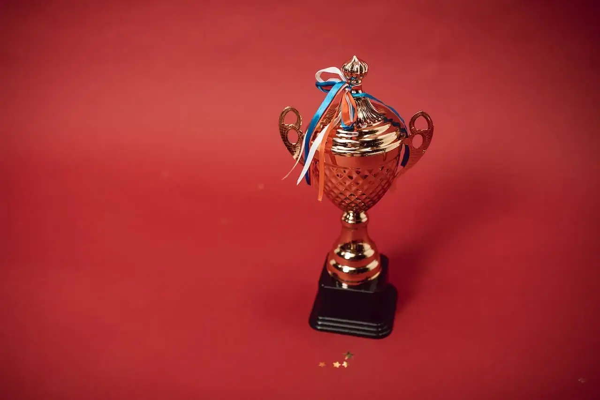

Café Carlos recibe el premio al mejor café de la ciudad:

Café Carlos, la icónica cafetería de la ciudad, ha sido
reconocida por su excelente café con el premio al mejor café
de la ciudad.
Este galardón fue otorgado por un panel de jueces expertos en
café, quienes destacaron el sabor, la calidad y la consistencia
del café servido en Café Carlos.
El equipo de Café Carlos se enorgullece de haber ganado este
premio, ya que representa el compromiso constante de la
cafetería con la excelencia en cada taza de café que se sirve.
Desde la cuidadosa selección de los granos de café hasta el
proceso de tostado artesanal y la preparación de cada bebida por
expertos baristas, todo en Café Carlos se hace con la atención
al detalle necesaria para crear el mejor café posible.
La gerente general de Café Carlos, María Rodríguez, expresó su
agradecimiento al panel de jueces y a todos los clientes que han
apoyado a la cafetería a lo largo de los años: "Este premio es
un testimonio del arduo trabajo y la dedicación de todo el
equipo de Café Carlos, así como de la pasión que tenemos por el
café. Nos enorgullece ser reconocidos como el hogar del mejor
café de la ciudad y estamos emocionados de seguir sirviendo a
nuestros clientes con la misma calidad y excelencia que
siempre".
Este reconocimiento ha confirmado a Café Carlos como uno de los
principales destinos de café de la ciudad y ha aumentado su
reputación como una cafetería de alta calidad. Los clientes
pueden disfrutar de una variedad de bebidas de café y bocadillos
frescos en un ambiente acogedor y relajado mientras saborean el
mejor café de la ciudad.